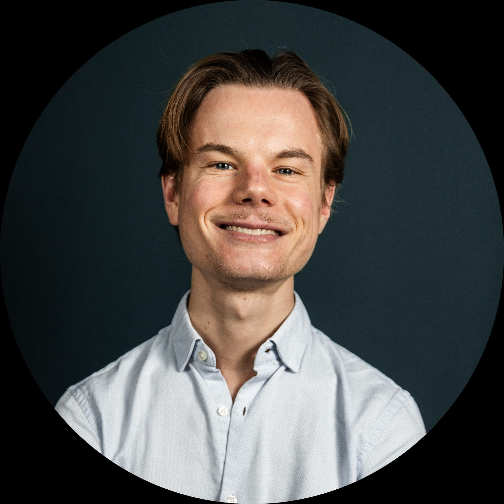

Euridium was founded with a simple conviction — organizations navigating the AI regulatory landscape deserve better than fragmented newsletters and manual spreadsheets.

Background in international relations, European studies and human rights, with a focus on AI governance and European regulation. Combining academic expertise in EU policy with a deep understanding of the geopolitical and regulatory dynamics shaping the future of artificial intelligence.
Euridium was born from a personal frustration — spending hours each week piecing together fragmented regulatory intelligence from dozens of sources, with no professional tool to structure it. If sophisticated organizations were doing this manually, the problem was real.
We are building the intelligence infrastructure that organizations will rely on to understand, anticipate and act on the regulatory forces shaping the future of artificial intelligence. Our approach combines deep regulatory and policy expertise with modern data intelligence technology — producing the kind of structured, actionable intelligence that no general-purpose tool currently provides.
Whether you are a potential user, investor or collaborator — we want to hear from you.
GET IN TOUCH →